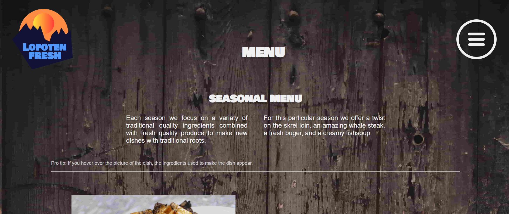

Administrative detaljer
Vår kunde
Sigur Skarby, eier av Lofoten Fresh.
Sigur er fra Lofoten, men bor for tiden i Trondheim. Han jobber på Nidar som industrikokk. Drømmen er likevel å starte en egen bedrift i Lofoten. For Sigur er lokale og gode råvarer viktig, og han vil gjerne innovere den unike mattradisjonen fra Lofoten gjennom Lofoten Fresh. Visjonen til Lofoten Fresh er i tråd med slow-foodbevegelsen.
Testdokument
Vi har utviklet en spørreundersøkelse som vi både har sendt ut til distribuerte testsubjekter, og som vi har gitt til deltakerene etter den live, mer formelle brukertesten.
Først har vi noen spørsmål for å kartlegge ulike detaljer om testsubjektene som er relevant for målgruppen. Disse er kjønn, alder, morsmål og om deltakeren har vært på ferie i Norge i løpet av de siste tre årene. Målgruppen for Lofoten Fresh er både norske og utenlandske turister, og det er dermed ønskelig å vite om testsubjektene har vært på norgesferie i det siste. I tillegg er det ønskelig å ha testsubjekter med forskjellige morsmål for å dekke et representativt utvalg av målgruppen.
Neste spørsmål tar for seg hvilken nettleser testsubjektene benyttet under testen.
Deretter har vi 10 spørsmål som kommer fra SUS-modellen.
Til slutt i spørreundersøkelsesskjemaet har vi fire spørsmål for å sjekke funksjonaliteten til nettstedet. Disse spørsmålene gir svar på om formålene til nettstedet oppfylles.
Spørreundersøkelse (engelsk)Live brukertester
I tillegg til å sende ut spørreundersøkelser gjennomførte vi strukturerte brukertester med observasjon av testpersonene. Før testen starter får testeren beskjed om følgende:
- Brukertesten er helt frivillig, og testeren kan avbryte når som helst uten å måtte oppgi grunn.
- Brukertesten er til for å teste designet av nettstedet, ikke ferdighetene til testeren.
- Nettstedet er ulviket av studenter som lærer om utvikling av nettsted underveis i prosessen, og funksjonaliteten til nettstedet vil dermed kunne være begrenset på visse områder.
- Gjennom testen ønsker vi at testeren "tenker høyt". Dette vil si at man høyt sier hva man tenker underveis i testen, både hva man ser og grunner til at man tar ulike handlinger. Dette er for at observatøren skal kunne forstå hvorfor brukeren gjør som den gjør.
- Observatøren har ikke mulighet til å hjelpe testeren under brukertesten. Dette er for å se hva som om designet er enkelt og intuitivt når en utenforstående som ikke har deltatt på utviklingen bruker nettstedet.
- Kort forklaring om at Lofoten Fresh er en foodtruck basert i Lofoten.
- Testeren vil få ulike oppgaver som skal fullføres. Når testeren mener de har fullført oppgaven, sier de dette og vil få påfølgende oppgave.
Vi satte opp 4 testoppgaver som testeren skulle fullføre. Oppgavene var som følger:
- Du har hørt om foodtruken til Lofoten Fresh og manøvrert deg fram til nettstedet til bedriften. Finn ut hvor foodtrucken befinner seg.
- Klarer du å legge inn en bestilling av catering til din sønns Bar Mitzvah?
- Du har mange allergier, og er derfor interessert i å finne ut hva som er i en "Lofoten Fresh burger" før du bestiller. Hvordan gjør du dette?
- Etter å ha sett nettstedet, lurer du på hvem grunnleggeren av Lofoten Fresh er. Finn ut dette på nettstedet.
Etter testeren har fullført alle oppgavene, holdes det et ustrukturert intervju der løse tråder samles. Observatøren tar opp spørsmål som ble stilt underveis i testen, og har mulighet til å klargjøre handlingene til testeren. Testeren får også anledning til å stille spørsmål om nettstedet til observatøren. Til slutt i intervjuet spørres det etter helhetsinntrykket av nettstedet, samt forbedringsforslag fra testeren.
Brukertestere
Distribuerte testere
For å få et representativt utvalg for målgruppen har vi spurt totalt 14 menn og kvinner i aldersgruppen 19-57 om å teste nettstedet og svare på spørreundersøkelsen. Målgruppen for nettstedet er alle som har mulighet til å betale for egen mat, og som har den teknologiske kyndigheten til å manøvrere seg på Internettet. Derfor har vi forsøkt å ha et bredt aldersspenn av voksne. Gjennomsnittsalderen på disse testerne er 32 år, og medianalderen er 31 år.
Jamfør P1 er målgruppen for Lofoten Fresh turister i Norge. I følge Turistundersøkelsen består turistmassen i Norge 63% av norske innbyggere og 37% av utenlandske. Dermed ønsket vi å teste både på norsktalende og ikke-norsktalende mennesker. Av testerne som svarte på spørreundersøkelsen vår hadde 71% norsk som morsmål, mens 29% hadde et annet førstespråk (nederlandsk, tysk og dansk). Kun én av brukertesterene hadde ikke vært på ferie i Norge i løpet av de siste tre årene. Vår klient var én av de distribuerte testerne.
I tillegg er målgruppen for nettstedet definert i P1 som gourmeter, men dette har vi ikke tatt høyde for i det stratifiserte utvalget av brukertestere. For fremtidig testing kan dette være interessant å inkludere i utvalget.
Live testere
Totalt gjennomførte vi 2 strukturterte brukertester der vi observerte testobjektene. Her testet vi to i samme aldersspenn som de distribuerte testerene, som begge hadde norsk som morsmål og som begge hadde vært på norgesferie i løpet av de siste tre årene.
Testplattformer og nettlesere
Testpersonene benyttet seg av nettlesere på egne enheter. I spørreskjemaet spurte vi et spørsmål til brukerne om hvilken nettleser de benyttet. Se bildet nedenfor. Da nettstedet vårt ikke er tilrettelagt for bruk på mobil per nå, har vi tatt utgangspunkt i at brukerne i hovesak har testet på desktop.
Svarene på dette spørsmålet fordelte seg slik i den distribuerte brukertesten:
Svarene på dette spørsmålet fordelte seg slik i den live brukertesten:
Vi ser at resultatene samsvarer med forventningen: De fleste brukerne testet nettstedet på desktop. Én av respondentene har svart at de har testet nettstedet i "The messenger browser". Denne testen er gjennomført på mobil.
Ifølge Statcounter er fordelingen av mest brukte nettlesere i Norge slik:
- Google Chrome 69,7%
- Apple Safari 15,97%
- Edge 5,81%
- Firefox 4,17%
Distribuert og live brukertest sett under ett, gir denne fordelingen av nettlesere brukt på desktop i testen:
- Google Chrome 46,67%
- Apple Safari 46,67%
- Edge 6,67%
Dette stemmer greit overens med forventet fordeling basert på tallene ovenfor fra Statcounter. Populasjonsstørrelsen er relativt liten med n=16, noe som kan være en forklaring på hvorfor fordelingen av brukte nettlesere avviker noe fra forventningen.
Noe som kunne vært interessant å analysere ved en større populasjonsstørrelse, er om brukeropplevelsen påvirkes nevneverdig av hvilken nettleser som benyttes. Da vi kun har 16 respondenter til sammen, ser vi det ikke som hensiktsmessig å sammenlikne SUS-score basert på nettleser.
Tilbakemeldinger
Fritekst og muntlig tilbakemelding fra brukere
Basert på fritekstkommentarer i spørreskjemaene, samt muntlig tilbakemelding i etterkant av live brukertester kan tilbakemeldingen oppsummeres som under. Vi har kodet disse tilbakemeldingnene med design, navigasjon, innhold og brukskvalitet for å forholde oss til kravene for P4. Brukskvalitet er i henhold til ISO 9241-11 (1998) definert som
"I den graden et produkt kan brukes av spesifiserte brukere for å oppnå spesifiserte mål ame anvendbarhet, effektivitet og tilfredshet i ein spesifisert brukskontekst."Vi forholder oss til denne definisjonen av brukskvalitet, som vi vil se på under overskriften System Usability Scale - SUS.
Positiv tilbakemelding:
- Gjennomført "clean" visuell stil og branding. (design)
- Nettstedet er enkelt å bruke og navigere. (navigasjon)
- Nettstedet tjente de forventede hensiktene som brukerne hadde. (innhold)
Forbedringspotensial:
- Fonten "Bowlby One SC" er vanskelig å lese fordi den er for fet. (design + brukskvalitet i form av universell utforming)
- Nettstedet har for store tekstenheter med liten skriftstørrelse. Dette skaper en følelse av overlast av informasjon hos brukerne. (design)
- At menyen utvider seg i y-retning når den åpnes, skaper forvirring hos brukerne, da innholdet nedefor også flytter på seg. (navigasjon)
Tilbakemelding fra produkteier
Vår klient var veldig fornøyd med implementasjonen av nettstedet, og synes den var enkelt satt opp og oppfylte kravene bra. Til videre utvikling ønsket han at logoen skulle være mer fremtredende i designet, for eksempel som del av bakgrunnene på sidene.
System Usability Scale - SUS
Tabellen nedenfor viser den gjennomsnittlige SUS-scoren for hvert av spørsmålene i SUS-skjemaet. Verdiene er rundet av til to desimaler.
| Spørsmål Nr. | SUS-Spørsmål | Gjennomsnittlig score |
|---|---|---|
| 1 | I think that I would like to use this website frequently | 3,44 |
| 2 | I found the website to be unnecessarily complex | 1,38 |
| 3 | I thought the website was easy to use | 4,75 |
| 4 | I think that I would need the support of a technical person to be able to use this website | 1,25 |
| 5 | I found the various functions on this website were well integrated | 4,38 |
| 6 | I thought there was too much inconsistency on this website | 1,50 |
| 7 | I would imagine that most people would learn to use this website very quickly | 4,88 |
| 8 | I found the website very cumbersome to use | 1,13 |
| 9 | I felt very confident using the website | 4,69 |
| 10 | I needed to learn a lot of things before I could get going with this website | 1,06 |
| Sum | Total SUS-score (beregnet som beskrevet her) | 89,53 |
Den gjennomsnittlige SUS-scoren nettstedet har fått er 89,5. Jamfør SUS-skalaen, tilsvarer dette en score godt innenfor akseptabel brukskvalitet, og oppnår også nivået "excellent". Dette tolker vi som at brukerne er fornøyde, og synes nettstedet ikke har alvorlige feil eller mangler. Nettstedet har altså høy brukskvalitet, og gir en bra brukeropplevelse. Bildet nedenfor viser en veiledning til hvordan man kan tolke SUS-score. Bildet er hentet fra samme nettsted som beskriver SUS-score og beregning av denne.
Drøfting av SUS-score
Spørsmålet i SUS-skjemaet som har fått dårligst resultat, er følgende: "I think that I would like to use this website frequently". Dette spørsmålet har fått en gjennomsnittlig score på 3,44. En mulig forklaring på den lave scoren kan være at nettstedet tjener et formål spesielt når respondentene er på ferie, ettersom de ikke bor i Lofoten til vanlig. Spørsmålet kan derfor være tvetydig: Vil de bruke nettstedet hyppig til vanlig, eller når de er på ferie i Lofoten? Vi trekker konklusjonen om at det derfor ikke sikkert at nettstedets nytteverdi oppleves som lav, selv om scoren er lav på dette spørsmålet.
Endringer som følger av brukertest
For å løse problement med leseligheten av fonten Bowlby One SC tenker vi å endre fonten til Montserrat. Denne fonten er mindre fet vil forhåpentligvis være mer lesbar.
Løsningen vår på problemet med for store tekstenheter med liten skriftstørrelse vil være å dele opp tekstenhetene i mindre biter, og innføre et større hierarki. Dette hierarkiet vil hjelpe brukeren med å skille ut hvilken informasjon som er viktigst ved å har forskjellig skriftstørrelse, farge og utheving. Se bilde under.
Problemet med forvirringen rundt menyen på nettstedet vil vi løse ved å omstrukturere navigasjons-baren og top-baren (med overskrift for sida) slik at åpning av menyen ikke fører til at innholdet flytter på seg. Vi har ikke funnet ut hvordan vi vil løse dette rent teknisk.
Den konseptuelle modellen for bestilling av catering og testobjektenes mentale modell stemte ikke overens. For å løse dette tenker vi å legge inn ordre-knappen til catering-siden på bunnen av siden også. Slik kan den konseptuelle modellen ligg nærmere den mentale modellen til sluttbrukeren.
For brukskvaliteten har vi størst forbedringspotensial på hyppigheten brukere ønsker å nytte seg av nettstedet. Dette kan som nevnt tidligere være et resultat av at målgruppen er sesongbasert, hvilket gjør det vanskelig å forbedre dette området uten å endre hele konseptet for bedriften. Da må i så fall hele designet forkastes og prosessen med klienten starte fra start.
Refleksjon
Felles:
Vi har hatt ansvarlige og pålitelige gruppemedlemmer som har fullført arbeidsoppgaver til rett tid. Kommunikasjonen innad i gruppen har vært en viktig faktor for å sikre et godt samarbeid. Vi har brukt Daily Scrum på våre ukentlige møter, satt opp oversiktlige kanaler i Slack for planlegging og ad hoc kommunikasjon og nyttet oss av Trello for definering, fordeling og oversikt over arbeidsoppgavene. På grunn tidlig oppstart av disse samhandlingsmekanismene har vi ikke opplevd problemer med kommunikasjon, hvilket har tillatt oss å fokusere på utviklingen av nettstedet.
I dette prosjektet måtte vi definere oppdeling og fordeling av arbeidsoppgaver allerede i P2. Siden vi på dette tidspunktet ikke viste helt hva de ulike arbeidsoppgavene innebar, "låste" dette oss til en noe uorganisk fordeling. Arbeidsfordelingen vi skrev i P2 har vi siden overført til Trello hvor oppgaver og fordeling enkelt kan revideres i ettertid.
På grunn av praksis og sykdom har ikke alle gruppemeldemmer kunne deltatt fysisk på alle ukentlige møter. Vi har løst dette ved å bruke Zoom. Oversikt over status på prosjektet har vært tilgjengelig for alle medlemmer digitalt til enhver tid, og GitHub har tillatt distribuert jobbing. Alle i teamet er såpass kjent med git allerede at vi ikke har trengt å bruke tid på opplæring, men fått en bekreftelse på at bruk av versjonshåndtering er essentielt i et distribuert utviklingsprosjekt.
Individuell:
Anne:
I dette prosjektet har jeg lært viktigheten av å bruke verktøy for å administrere arbeidsoppgaver aktivt. På grunn av smittesituasjonen, har vi måtte arbeide helt eller delvis distribuert mange av ukene. Da har det vært svært verdifullt å bruke kanban-boardet Trello for å definere og fordele arbeidsoppgaver, både store og små. Definering av arbeidsoppgaver allerede i P2 var også hjelpsomt for å oppnå denne typen oversikt, men da et prosjekt alltid utvikler og endrer seg noe i løpet av arbeidet, var det essensielt å ha oversikt over endringene underveis. Vi brukte også Trello for å prioritere arbeidsoppgaver, og å merke oppgavene med labels som P3, P4, bug, CSS etc. Dette var veldig hjelpsomt for å holde den helhetlige oversikten i prosjektet for min del, og gjorde samarbeidet mer sømløst. Å ha denne typen oversikt har motivert meg til å legge inn en ekstra innsats i prosjektet, også hjemmefra. Det ga meg eierskap til prosjektet, noe jeg har lært at er viktig for meg.
Aksel:
Gjennom dette emnet har jeg lært en del om hvordan det er å jobbe i et team mot et felles mål og hva man da må forholde seg til. Vi har blant annet måtte forholde oss til covid-19 relaterte problemstillinger som for eksempel om vi skulle jobbe på grupperom eller om vi skulle jobbe kun digitalt. Dette har vært lærerikt for meg siden det skaper en ekstra kommunikasjons utfordring. Vi valgte å arbeide sammen på grupperom så framt ingen hadde vært i nærheten av noen som hadde fått påvist smitte, noe som fungerte bra. Sidene vi har brukt for å arbeide sammen har i stor grad vært Trello og Github. Jeg har med det fått en god kjennskap til disse sidene og hvordan man bruker dem så effektivt som mulig i en gruppe setting.
Susanne:
Jeg lærte at et stort prosjekt som dette trenger mye samkjøring. Med det mener jeg at det er viktig å planlegge godt, slik at når man skal jobbe på egenhånd har man noe godt dokumentert å gå etter. Samtidig så tar planleggingen deg bare så langt. Man må være åpen for å endre en del fra den opprinnelige planen når ting ikke fungerer eller ser like fint ut som man tenkte. Vi har gjort mange endringer fra designdokumentet vårt, både store funksjonelle endringer og små estetiske ting, og det har nok gjort at vi til slutt har endt med det beste produktet vi kunne lagd.
Viggo:
Gjennom prosjektet har jeg synes det har vært litt merkelig å ikke nytte seg av arbeidsmetoder som Scrum, Kanban eller APA 6th-kildeføring. Vi har heller måttet fokusert mer på det teknologiske aspektet, hvilket har vært lærerikt og oppfriskende. Tidlig i prosjektet så vi behovet for å sette opp rutiner for møter, kanaler for kommunikasjon og mekanismer for samhandling. Dette har hjulpet oss gjennom prosessen og tillatt en smidig utvikling uten smidig utvikling. Totalt sett synes jeg gruppen har gjort en formidabel jobb, og at samarbeidet har vært godt. Det at alle gruppemedlemmer har vært aktive og engasjerte har bidratt til god arbeidsmoral og god stemning.
Vegard:
Som mitt første ordentlige IT-prosjekt har jeg syntes hele prosessen rundt selve prosjektet har vært vel så lærerik og interessant som kodingen; hvordan man burde sette en workflow, bruke trello for å holde oversikt, jevnlige møter med statusoppdateringer, og samarbeid via Git. Har også sett nytten av å kunne sette faste mål man skal holde seg til, men likevel kunne være behjelpelig og fleksibel hvis noe ikke går etter planen //covid. Jeg har også fått en større innsikt i tiden det tar å bygge opp en side fra bunnen, og hvor mye tanke som ligger bak de forskjellige funksjonalitetene som er innebygd i sider.